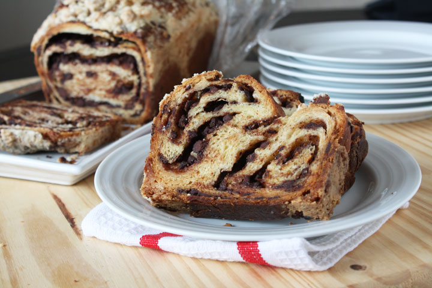

Home
Recipe for Syrian Babka

Description
Chocolate Babka is an irresistable yeasted cake filled with chocolate and cinnamon. It takes a bit of time to bake but it is totally worth the wait!
Chocolate babka, a sweet yeasted cake filled with chocolate and cinnamon. It just sounds so delicious. I've read about others making it on several blog sites. Quite often the post starts off something like this... "The only reference I have to chocolate babka comes from Seinfeld"....yadda yadda yadda...
Ingredients
- 1½ cups warm milk
- ½ ounce of active dry yeast
- ¾ cup plus a pinch of sugar
- 2 whole eggs
- 2 egg yolks
- 6 cups all purpose flour plus more for dusting
- 1 teaspoon salt
- 1 cup unsalted butter, cut into 1 inch pieces, plus more for greasing
Steps
- In a small bowl, sprinkle the yeast and a pinch of sugar into the milk. Stir and let it sit for five minutes until foamy. In a medium bowl, whisk together sugar, eggs, egg yolks, and yeast mixture.
- In an electric mixer with a paddle attachment, combine the 6 cups of flour and salt. Add the egg mixture and mix on low until the flour is incorporated, about 30 seconds.
- Change to the dough hook. Add 1 cup of butter and beat until incorporated and smooth, about 10 minutes. Turn out the dough onto a floured surface, knead a few times until smooth. Place the dough in a buttered bowl and turn to coat. Cover with plastic wrap and let it sit in a warm place to double in bulk. (About an hour)
- In a bowl stir together the chocolate, sugar and cinnamon. Using a pastry blender (or cake smoother) cut in the butter until combined.
- In another small bowl, whisk the egg and heavy cream and set aside.
- Combine the sugar and flour in a large bowl.
- Cut in the butter until the mixture resembles coarse crumbs.